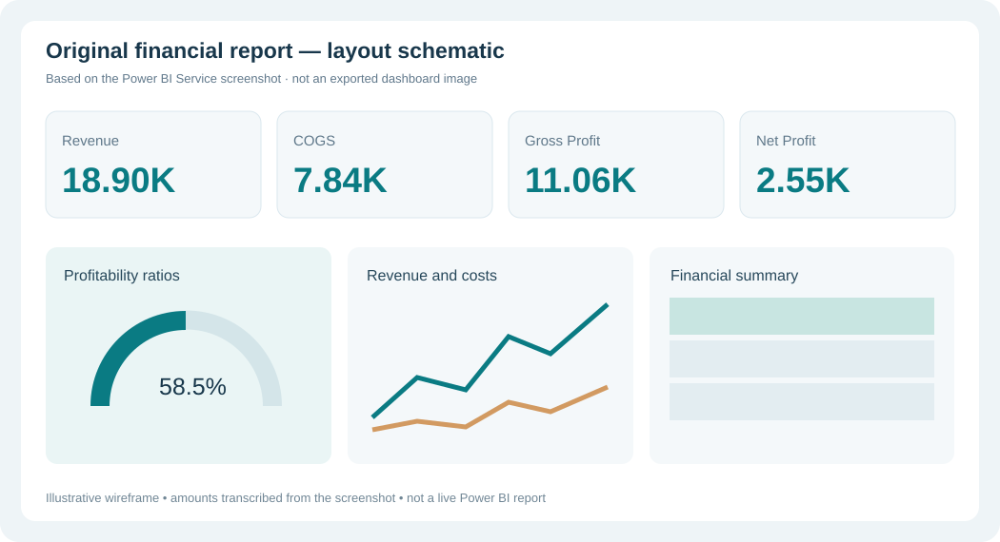

Financial intelligence,
without the clutter.
An eight-page financial reporting case study covering financial statements, business performance, working capital, and ratio analysis — with a more focused, decision-ready interface.
Revenue composition
Explore the eight redesigned views
Select a page to see the proposed visual structure. Only the four executive KPI values displayed in the uploaded dashboard screenshot are shown as numbers; the remaining pages use unpopulated layouts pending Power BI validation.
Executive overview
Four primary KPIs, one consistent unit system, and a straightforward profitability story.
Revenue to gross profit · same snapshot
Comparison using values visible in the original dashboard (K, currency not confirmed)
Reading the numbers
Source-aware business interpretation
Income statement
Condensed statement with aligned amounts, prominent subtotals and optional year-on-year variance.
Design priorities
- Financial statement subtotal hierarchy
- Clearly differentiated negatives and variances
- Currency units and fiscal period in subtitle
- Use source measures after reconciliation
Balance sheet
Assets, liabilities and equity organized into a compact reconciliation-first view.
Key quality control
- Ensure assets equal liabilities plus equity
- Use a common as-of date for comparisons
- Highlight subtotals and aligned units
- Show reconciliation exception only if verified
Cash flow
How operations, investing and financing activities explain changes in cash.
Operating activities
Cash generated by core business
Investing activities
Asset and investment movements
Financing activities
Debt, equity and distributions
Working capital
Operational liquidity, with clearly distinguished balance sheet and ratio measures.
Current assets
Assets convertible to cash
Current liabilities
Short-term obligations
Working capital
Assets less liabilities
Financial ratio detail
An auditable, grouped definition table instead of a wall of unrelated metrics.
Financial health | Ratios 1
Three clear categories replace the original oversized multi-row cards.
Liquidity
Short-term repayment capacity
Profitability
Income generation and return
Solvency
Leverage and capital structure
Revenue & performance drivers
A simplified analytics page with a clear slicer band, sales trend and product view.
Revenue trend by reporting period
Final chart uses validated financials table and year filters
Gross profit by product
Category comparison, with one consistent currency unit
This page is a design prototype created from the uploaded PBIX structure and original dashboard screenshot. It does not modify the source PBIX, execute DAX, or present invented results.
Grounded in the Power BI project
The redesign is based on the actual original report, not a generic finance template. This schematic illustrates the structure of the original Power BI Service dashboard before redesign. The real report remains available in the owner's Power BI account, but its public link is unavailable.

What I focused on redesigning
Clear KPI hierarchy, fewer competing visuals, legible metrics, a disciplined navy-and-teal palette, and a dedicated three-part Financial Health page instead of multi-row ratio cards.
Transparency: The original PBIX is preserved separately. Its eight-page structure and DAX measures informed these design concepts. This public site does not embed an inaccessible Power BI link or upload the private data model.
How the report is being improved
A consistent layout system applied to the full financial reporting experience, with calculation checks before numerical conclusions.
Executive storytelling
Prioritize revenue, costs and profit, reduce redundant charts, and make it immediately clear what each page answers.
Financial health
Group liquidity, profitability and solvency measures, then give each metric the right percent or multiple formatting.
Trustworthy reporting
Check measures, date filtering, data sources and accounting reconciliations before publishing final numeric conclusions.